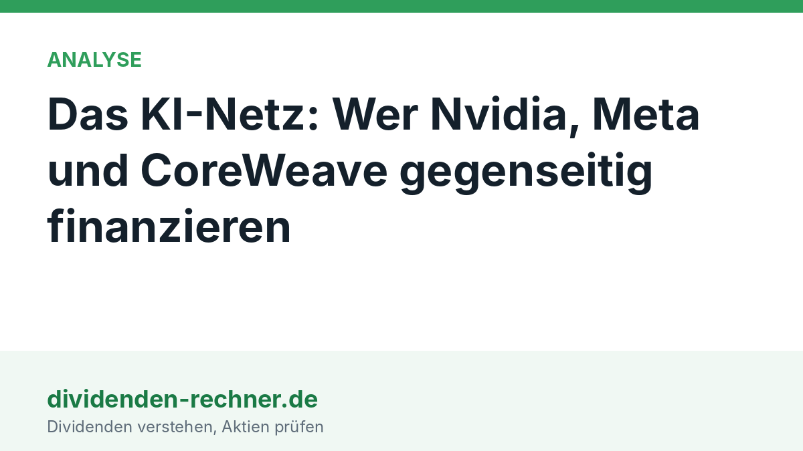

Analyse
Das KI-Netz: Wer Nvidia, Meta und CoreWeave gegenseitig finanzieren
Nvidia, AMD und Broadcom steigen bei Meta ein, Nvidia haftet für Rechenzentren und hält 11,5 % an CoreWeave. Wer wen bezahlt, und warum ein Ausfall mehrere Konzerne gleichzeitig trifft.

Kurz gesagt
Kern: Die Chiphersteller finanzieren ihre eigenen Kunden. Läuft die KI-Nachfrage schwächer, trifft das alle Beteiligten gleichzeitig.
- Neu: Nvidia, AMD und Broadcom wollen bis zu 5 Mrd. Dollar Meta-Aktien kaufen, bei einer Kapitalerhöhung von rund 37,5 Mrd. Dollar.
- Das Netz: Nvidia hält 11,5 % an CoreWeave und haftet mit bis zu 105 Mrd. Dollar für ein OpenAI-Rechenzentrum in Ohio.
- Risiko: Die Anleihen von CoreWeave rentieren bei rund 15 %. Die Aktien von AMD, Broadcom und Nvidia fielen am Freitag um 4 bis 11 %.
Was diese Woche passiert ist
Am 26. Oktober kündigte Meta eine Kapitalerhöhung an. Aus den ersten 35 Mrd. Dollar wurden nach der Nachfrage rund 37,5 Mrd.: 25 Mrd. Dollar Stammaktien zu 625 Dollar je Aktie und 12,5 Mrd. Dollar Wandel-Vorzugsaktien mit 6,5 % Zins. Später sollen weitere 60 Mrd. Dollar folgen. Meta rechnet für 2026 mit Investitionen von 135 bis 145 Mrd. Dollar, vor allem für Rechenzentren.
Am selben Tag meldeten Nvidia, AMD und Broadcom, sie könnten zusammen bis zu 5 Mrd. Dollar der Stammaktien kaufen. Nvidia nannte danach 3 Mrd. Dollar, AMD 1 Mrd. Dollar. Das ist rund ein Achtel der gesamten Kapitalerhöhung. Gekauft wird zum gleichen Preis wie bei allen anderen Anlegern.
Bemerkenswert ist, wer da kauft: Meta ist einer der größten Kunden der drei Konzerne. Die Lieferanten werden damit Teilhaber ihres Kunden.
Das Netz in einem Bild
Das Muster ist überall gleich. Ein Chiphersteller verkauft Chips an einen Kunden und sorgt zugleich dafür, dass der Kunde das Geld dafür hat. Das geht auf drei Wegen: über eine Beteiligung, über Verträge, die dem Kunden Einnahmen sichern, und über Garantien, die seinen Kredit billiger machen.
 Eigene Darstellung nach Unternehmensmeldungen und Agenturberichten. Gezeigt sind nur Beziehungen mit belegtem Betrag oder Vertrag.
Eigene Darstellung nach Unternehmensmeldungen und Agenturberichten. Gezeigt sind nur Beziehungen mit belegtem Betrag oder Vertrag.
Der Vergleich mit dem Autohandel hilft: Ein Hersteller leiht dem Käufer Geld für den neuen Wagen. Der Käufer bekommt das Auto, der Hersteller den Verkauf plus Zinsen. Das funktioniert, solange der Käufer zahlt. Hier ist der Hersteller Nvidia, der Käufer ein Rechenzentrum.
| Wer | Was | Betrag | Stand |
|---|---|---|---|
| Nvidia, CoreWeave | Beteiligung | 2 Mrd. Dollar, danach 11,5 % der Aktien | Januar 2026 |
| Nvidia, SB Energy | Garantie für Miete und Strom (OpenAI-Rechenzentrum in Ohio) | bis zu 105 Mrd. Dollar, dazu 1,5 Mrd. Dollar Beteiligung | 17. August 2026 |
| Nvidia, Meta | Beteiligung an der Kapitalerhöhung | 3 Mrd. Dollar | 27. Oktober 2026 |
| AMD, Meta | Beteiligung an der Kapitalerhöhung | 1 Mrd. Dollar | 27. Oktober 2026 |
| Broadcom, Meta | Interesse an Meta-Aktien | Betrag nicht genannt | 26. Oktober 2026 |
Besonders groß ist die Ohio-Garantie. OpenAI mietet das Rechenzentrum 20 Jahre lang von SB Energy, einer Tochter von SoftBank. Zahlt OpenAI nicht, deckt Nvidia die Lücke zwischen Mindestwert und dem, was der Eigentümer durch Neuvermietung oder Verkauf bekommt. Nvidia ist dort exklusiver Chiplieferant und rechnet nach Medienberichten mit bis zu 200 Mrd. Dollar Umsatz aus dem Standort.
Was das bedeutet: Der Umsatz von Nvidia hängt von Kunden ab, die Nvidia selbst finanziert. Ein Teil der Nachfrage ist damit nicht unabhängig, sondern vom Chiphersteller mit bezahlt.
Wer die Rechnung bezahlt
Die großen Cloud-Anbieter finanzieren ihre Investitionen zunehmend nicht mehr aus der Kasse. Die Free Cashflows der letzten zwölf Monate zeigen ein sehr unterschiedliches Bild:
 Eigene Darstellung nach den Quartalsberichten. Amazon: Mittelabfluss laut Zwölfmonatszahlen bis September 2026.
Eigene Darstellung nach den Quartalsberichten. Amazon: Mittelabfluss laut Zwölfmonatszahlen bis September 2026.
- Microsoft erwirtschaftet 60 Mrd. Dollar. Die Investitionen stiegen jedoch von 23,9 Mrd. Dollar im Geschäftsjahr 2022 auf 115,9 Mrd. Dollar im Geschäftsjahr 2026 (+385 %), der Free Cashflow im selben Zeitraum nur von 65,1 auf 67,0 Mrd. Dollar (+3 %). Mehr dazu in unserer Analyse der Microsoft-Zahlen.
- Alphabet investierte im dritten Quartal 51,4 Mrd. Dollar, 114 % mehr als ein Jahr zuvor. Der Free Cashflow lag im Quartal bei −9,1 Mrd. Dollar. Details stehen in der Alphabet-Analyse.
- Amazon hat bei einem operativen Cashflow von 168 Mrd. Dollar einen Free Cashflow von −42 Mrd. Dollar.
- Meta will 2026 bis zu 145 Mrd. Dollar investieren und holt sich jetzt zusätzlich Kapital über die Börse.
Die Konzerne leihen sich das Geld. Alphabet, Amazon, Meta und Oracle haben nach Angaben der Datenfirma LSEG in diesem Jahr bis Mitte Oktober mehr als 228 Mrd. Dollar an Anleihen ausgegeben, mehr als doppelt so viel wie im gesamten Vorjahr.
Was das bedeutet: Der Chip-Boom wird zunehmend mit geliehenem Geld und neuen Aktien bezahlt. Das geht gut, solange die Kapitalmärkte mitspielen.
Wo es schon knirscht: CoreWeave
CoreWeave betreibt Rechenzentren und ist ein Großkunde von Nvidia. Nvidia ist zugleich zweitgrößter Aktionär. Der Konzern hat sich auf Fremdkapital gestützt: Am 14. Oktober fiel die Aktie um rund 16 %, die Anleihen mit Laufzeit bis 2031 und 2032 rentierten bei rund 15 %. Das ist der Zins, den Anleger für ein sehr riskantes Unternehmen verlangen. Die Ratingagentur S&P stuft CoreWeave mit B+ ein, also unterhalb der Anlagequalität.
Der Konzern selbst hält die Reaktion für überzogen und verweist auf Aufträge, die seine Schulden mehr als abdecken. Auch andere Werte aus dem Umfeld gaben nach: Oracle fiel an dem Tag um fast 9 %, Nebius um rund 10 %.
Was das bedeutet: Der Markt behandelt CoreWeave bereits wie einen Kredit, der ausfallen könnte. Nvidia hat dort Aktien und Mietzusagen und wäre bei einem Ausfall doppelt betroffen.
Der Freitag: alle fallen gleichzeitig
Am Freitag fielen die drei Chipkonzerne, die zuvor ihren Einstieg bei Meta angekündigt hatten, besonders stark:
 Eigene Darstellung nach Börsendaten vom 30. Oktober 2026, Schlusskurse laut Wall Street Journal.
Eigene Darstellung nach Börsendaten vom 30. Oktober 2026, Schlusskurse laut Wall Street Journal.
AMD verlor knapp 11 %, Broadcom rund 5,5 %, Nvidia rund 4 %. Die Chip- und Cloud-Werte fielen gemeinsam. Auslöser waren die Zahlen von Alphabet und Amazon, danach der Einbruch bei Intel. Wie sich der Tag auf den Gesamtmarkt auswirkte, steht in unserem Marktüberblick.
Was das bedeutet: Wer mehrere dieser Aktien besitzt, ist weniger breit gestreut, als es aussieht. Die Unternehmen hängen über Beteiligungen, Verträge und Garantien aneinander und bewegen sich deshalb stärker im Gleichschritt.
Was bei einem Rückschlag passiert
Fällt die Nachfrage nach KI-Rechenleistung, trifft das mehrere Stellen in der gleichen Reihenfolge.
- Kunden mit schwacher Bilanz wie CoreWeave bekommen Probleme, ihre Kredite zu bedienen.
- Die Chiphersteller verlieren Aufträge und müssen auf ihre Beteiligungen und Garantien abschreiben.
- Gebrauchte Chips und Rechenzeit kommen billig auf den Markt und drücken die Preise für neue Chips.
Ein Vorbild liegt 25 Jahre zurück: Die Netzausrüster der Dotcom-Zeit hatten ihren Kunden Kredite gegeben, damit diese ihre Geräte kaufen. Als die Kunden pleitegingen, mussten sie Milliarden abschreiben. Der heutige Unterschied: Nvidia, Microsoft, Alphabet und Meta haben starke Bilanzen. Sie können Verluste tragen. Die Frage ist, wie viele Garantien und Beteiligungen sie am Ende gleichzeitig tragen müssen.
Was Anleger daraus ablesen
Das Netz erklärt, warum KI-Aktien zuletzt so gleichmäßig steigen und fallen. Gute Nachrichten für einen Konzern gelten für die anderen mit, schlechte ebenso. Wer in Dividendenwerte aus dem Netz investiert, etwa Microsoft, bekommt zwar regelmäßige Ausschüttungen, trägt aber das gleiche Grundrisiko: Die Dividende stammt aus einem Free Cashflow, der durch die hohen Investitionen schrumpft. Das ist keine Empfehlung und keine Prognose, sondern die Beschreibung der Lage.
Quellen
- Meta, Mitteilungen zur Kapitalerhöhung vom 26. und 27.10.2026, nach Berichten von Anadolu und FourWeekMBA
- IFR: Nvidia investiert 2 Mrd. Dollar in CoreWeave
- Investinglive: CoreWeave-Anleihen rentieren wie Risikoanleihen, 15.10.2026
- Reuters über Investing.com: Nvidia garantiert bis zu 105 Mrd. Dollar für OpenAIs Rechenzentrum in Ohio, 17.08.2026
- Quartalsberichte von Microsoft, Alphabet und Amazon (siehe verlinkte Analysen)
- Wall Street Journal, J. Mackintosh, „Straßenkenntnis", 01.11.2026 (Themenhinweis und Kursdaten)
Dieser Beitrag fasst Berichte in eigenen Worten zusammen. Alle Angaben ohne Gewähr. Keine Anlageberatung.
Hinweis: Dieser Text dient der allgemeinen Information und ist weder Anlage-, Steuer- noch Rechtsberatung. Kapitalanlagen sind mit Risiken verbunden, bis hin zum Totalverlust.